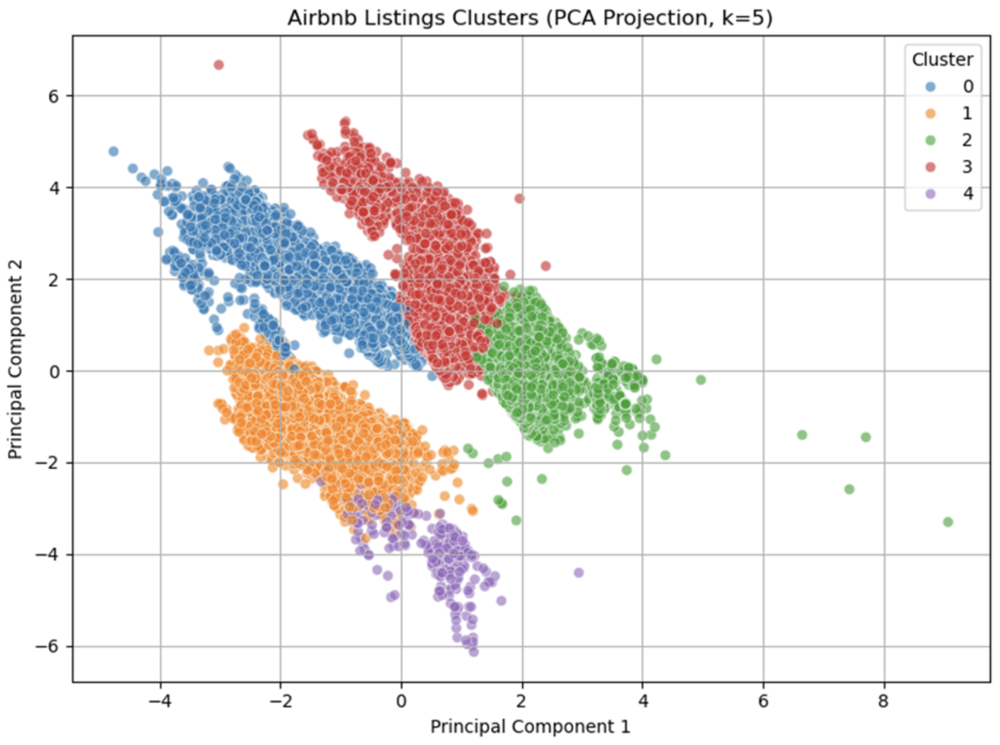

Clustering with Python
Development Team Project Reflection
For the group project, an analysis of Airbnb listings in New York City was carried out. Using a Kaggle dataset from 2019, we created a machine learning (ML) algorithm to analyse business trends. Two primary questions were identified:
- Question 1: What factors have the strongest influence on Airbnb listing prices in New York City?
- Question 2: How do neighbourhood characteristics and listing attributes interact to influence Airbnb pricing patterns across different New York City boroughs, and what pricing strategies can hosts implement to optimize revenue based on these spatial dynamics?
Our results were promising:
The type of room turned out to be the main factor in influencing prices in New York Airbnb listings, with location also playing a significant role. The results seemed realistic and in tune with the average person’s needs when looking for travel accommodation: you consider space depending on the number of people, and location depending on whether or not you have your own means of transport.
For the second question, out of the five clusters we found, number one represents expensive listings with low availability. These are suitable for high-end customers who are willing to pay for premium locations. Cluster number 2, located in Central Brooklyn, has mid-tier prices and decent availability. This area shows great potential for growth, which is why we chose it as a suggestion for the executive team.
This project introduced me to the struggle of learning in a more realistic context. Overall, I enjoyed being part of a team, even though we had a busy schedule and being part of meetings proved to be difficult, I found it rewarding to learn how to work together, with different strengths and also perspectives.